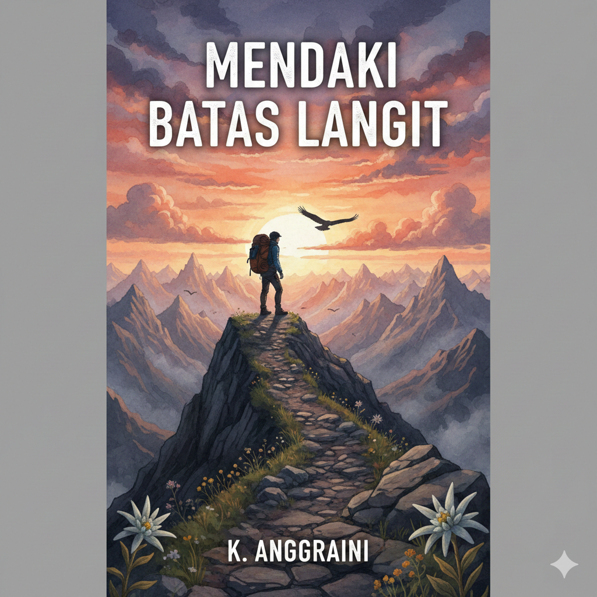
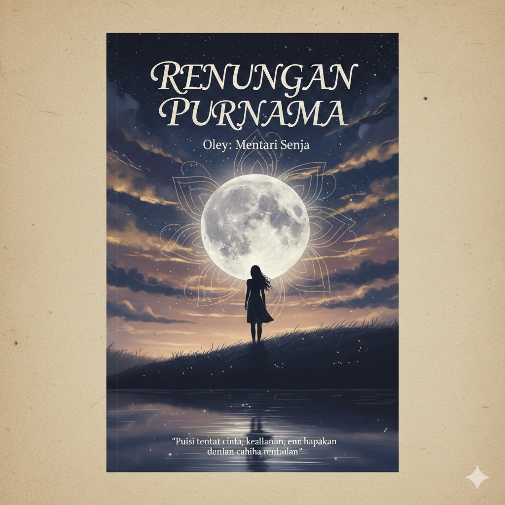
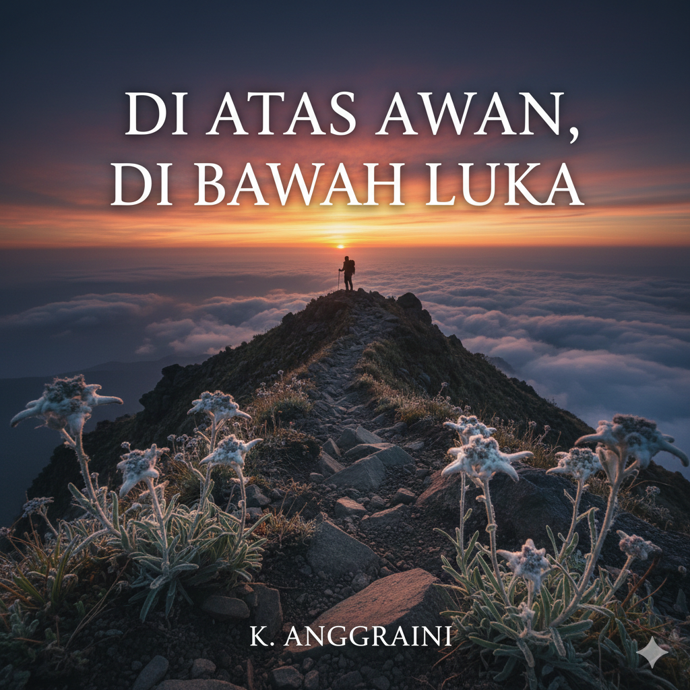
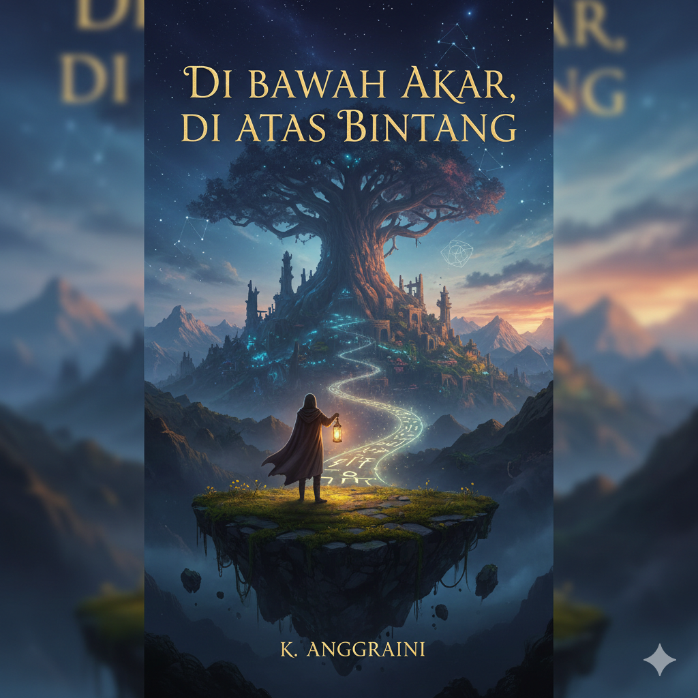

Buku Cerita Anak Umur 1-3 tahun
Rp38.000
Buku ini membahas cerita aku dan tubuhku.

Buku Cerita Anak umur 3-5 tahun
Rp47.000
Buku ini membahas panduan hidup anak keren.

Buku Cerita Anak Umur 5-6 tahun
Rp55.000
Buku ini membahas belajar ke toilet sendiri.

Buku Cerita Negeri 5 Menara
Rp65.000
Buku ini menceritakan perjalanan hidup Alif, seorang anak Minang yang menempuh pendidikan di pondok pesantren Madani. Awalnya penuh keraguan, namun perlahan Alif menemukan makna perjuangan, persahabatan, dan kekuatan impian.

Buku Cerita Mendaki Batas Langit
Rp75.000
Buku ini mengisahkan tentang perjalanan seorang pendaki yang mencari jawaban atas kegelisahan hidupnya di puncak-puncak tertinggi, Bukan sekadar tentang kekuatan fisik untuk menaklukkan medan yang terjal, tetapi tentang bagaimana setiap langkah di jalur pendakian membawanya lebih dekat dengan dirinya sendiri.

Buku Renungan Purnama
Rp75.000
Buku ini menceritakan Menampilkan siluet seorang wanita yang berdiri di tepi perairan tenang, menatap bulan purnama yang sangat besar dan bercahaya.

Buku Di Atas Awan, Di Bawah Luka
Rp85.000
Novel ini adalah catatan perjalanan tentang berdamai dengan masa lalu. Bahwa berada "di atas awan" mungkin memberimu pemandangan yang indah, namun kakimu harus tetap menapak "di bawah" untuk menyembuhkan luka yang nyata.
Buku Kompas Hati
Rp55.000
Buku ini menceritakan tentang kesetiaan. Tentang bagaimana seorang sahabat bisa menjadi penunjuk arah saat kita kehilangan jati diri, dan bagaimana puncak gunung hanyalah bonus dari perjalanan panjang bernama rasa percaya.

Buku Di Bawah Akar, Di Atas Bintang
Rp65.000
Buku ini menceritakan kisah tentang perjalanan melampaui logika. Ini tentang menemukan keajaiban di tengah ketidakmungkinan dan menyadari bahwa setiap bintang yang kita lihat, mungkin adalah buah dari akar yang kita tanam di bumi.
Buku Di Antara Bintang Dan Sahabat
Rp65.000
Buku ini menceritakan perayaan tentang kerja sama tim. Sebuah pengingat bahwa petualangan paling hebat bukanlah tentang tempat yang kita tuju, melainkan tentang dengan siapa kita berbagi tawa dan peluh di sepanjang jalan.